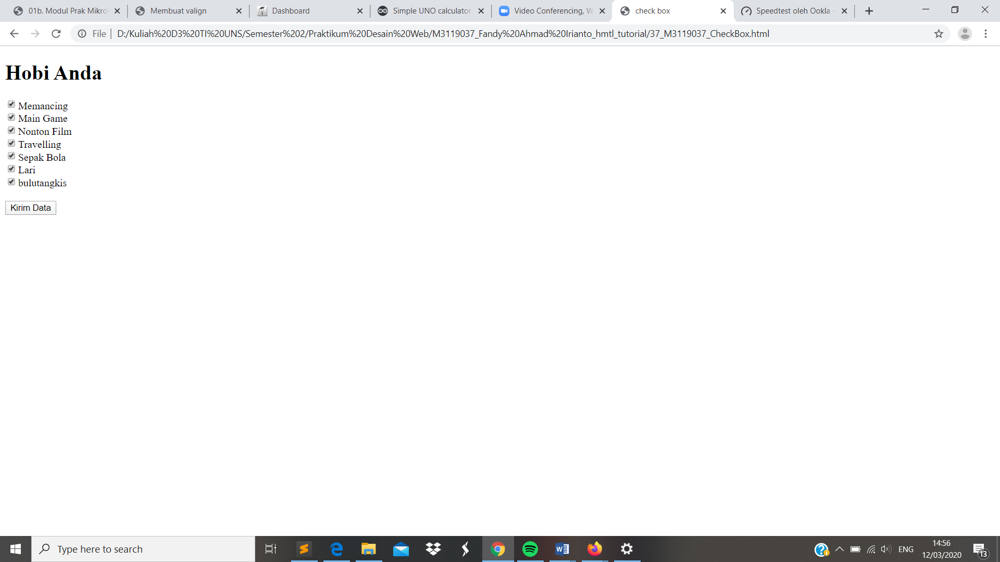

Check Box
//Komponen lain dari form yakni Check Box. Check Box digunakan untuk input berupa pilihan. Untuk tampilan dari check box hampir sama dengan radio button , namun pada check box dapat memilih lebih dari satu item. ag untuk membuat check box hampir sama dengan radio button yaitu (input type=”checkbox” name=”namakomponen” value=”nilai” /). Ada banyak atribut yang bisa digunakan oleh tag input type checkbox, seperti atribut name, value, checked, disabled, id, dan class.
<!DOCTYPE html>
<html>
<head>
<meta charset="UTF-8">
<title> check box</title>
</head>
<body>
<h1> Hobi Anda </h1>
<form method="post" action="">
<input type="checkbox" name="hobi" value="memancing" />Memancing <br />
<input type="checkbox" name="hobi" value="main game" />Main Game <br />
<input type="checkbox" name="hobi" value="nonton film" />Nonton Film <br />
<input type="checkbox" name="hobi" value="travelling" />Travelling <br />
<input type="checkbox" name="hobi" value="sepak bola" />Sepak Bola <br />
<input type="checkbox" name="hobi" value="lari" />Lari<br />
<input type="checkbox" name="hobi" value="bulutangkis" />bulutangkis<br />
<br />
<input type ="submit" name ="submit" value="Kirim Data" />
</form>
</body>
</html>
Tampilan Hasil Percobaan

Kesimpulan
Pada percobaan membuat Check Box dapat disimpulkan bahwasalnya check box sebenarnya hampir mirip dengan radio button dimana berfungsi untuk memilih item. Hanya saja check box dapat memilih lebih dari 1 bahkan 2 pilihan item dalam box.